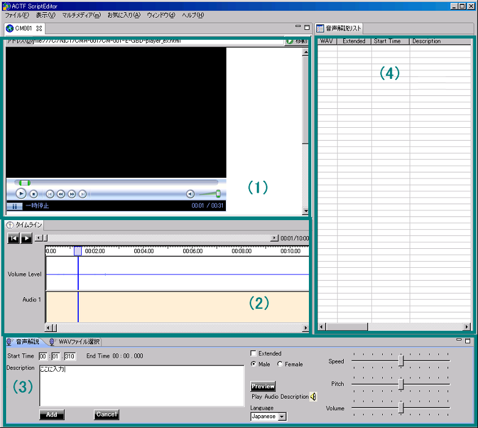
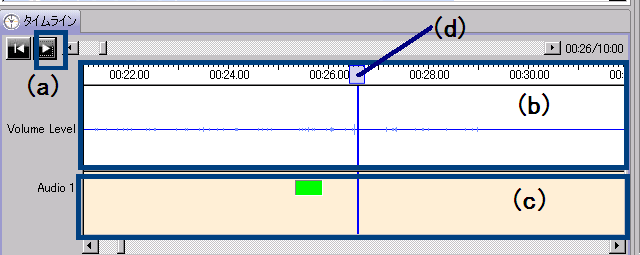
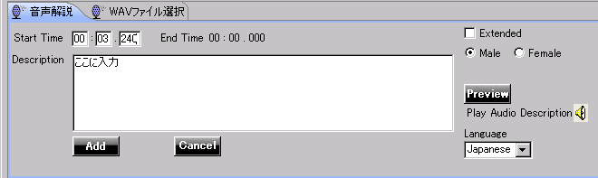
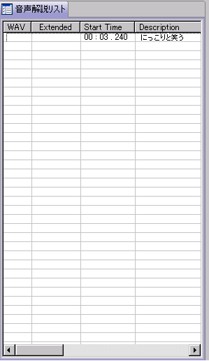
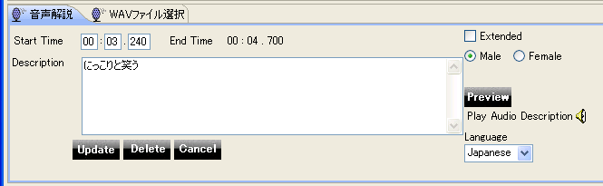
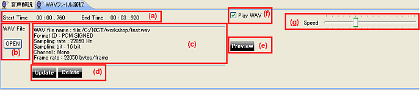
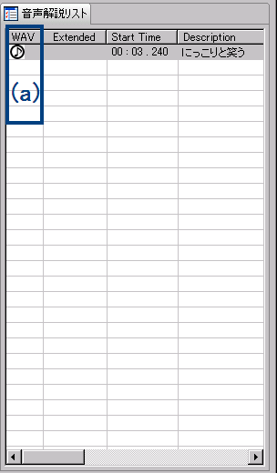
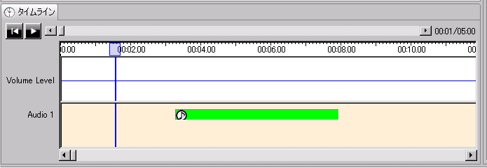
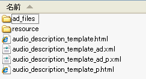
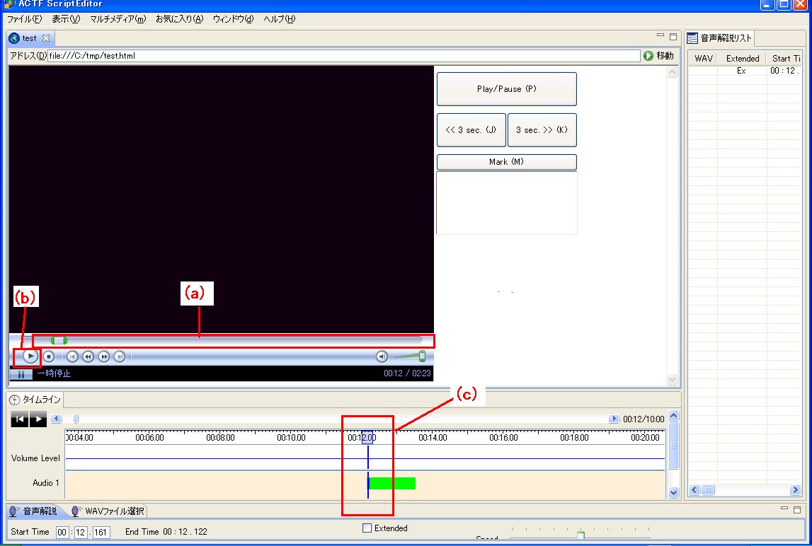

Eclipse ACTF Script Editor Lite (EASEL) の使用法 Eclipse ACTF Script Editor Lite (EASEL) の使用法
Eclipse ACTF Script Editor Lite (EASEL) の使用法 Eclipse ACTF Script Editor Lite (EASEL) の使用法
図1：EASEL 全体図
EASELは、４つのパネルに分かれています（図１）。 ４つのパネルの役割は、それぞれ下記のとおりです。
EASELを用いて音声ガイドを付与する際には、まず対象の動画を含むページをブラウザで開いた上で作業を実施します。 インターネット上の動画ではなくPC上に保存された動画を利用する場合については、PC上に保存された動画に対する音声ガイドの付与についてを参照ください。
EASELのブラウザで動画を含むページを開いたら、実際に動画を閲覧しながら音声ガイドを作成していきます。
おおまかな作業の流れとしては、まず、動画の音を聞きながらどの部分に音声ガイドを入れられるかの見当をつけ、
次に音声ガイドの文言を入力し、最後に再生タイミングの調整を行うという順番になります。
音声ガイドのタイミングの微調整には下記のタイムラインパネルを使用します。

図２： タイムラインパネル
タイムラインパネル内の再生・停止ボタン（図２(a)）で動画の再生・停止を行うことが出来ます。
次に、再生した音声の波形が音声タイムライン表示部（図２(b)）に表示されます。音声ガイドは基本的には無音部分に入れますので、この波形の 大小も参考になります。 音声ガイドの入力タイミングを決めたら、音声ガイド入力パネル（図１(3)）にフォーカスを移します。

図３： 音声ガイド入力パネル
音声ガイド入力パネル（図３）では、音声ガイドをテキスト入力することが出来ます。 音声ガイド入力パネルの入力部（図３(b)）に、音声ガイドを入力します。開始の時間は同じパネルの開始・終了時間の表示部（図３(a)）で確認できます。 この時間は、タイムラインパネルのタイムスクロールバー（図２(d)）が示している時間と同期しています。入力した内容は、Previewボタン（図３(e)）を押すと、合成音声を用いて正しく読んでいるかどうかが確認できます。 この際、音声ガイドの読み上げにかかった時間が、音声ガイドのタイムライン表示部（図２(c)）に現れる四角い緑色の領域で確認できます。この四角い緑色の部分の左端が該当の音声ガイドの開始位置、右端が終了位置を表しています。 音声ガイドを入力すると、音声ガイド入力パネルに追加（Add）ボタン（図３(c)）とキャンセル(Cancel)ボタン（図３(d)）が表示されます。追加ボタンを押すことで、入力中の音声ガイドが音声ガイド一覧に追加されます。

図４：音声ガイドリストパネル
音声ガイドリストパネル（図４）には、音声ガイドの開始時間と内容が時系列順に追加されていきます。 この音声ガイドリストパネル（図４）上で音声ガイドを選択すると、音声ガイド入力パネル（図３）に該当する音声ガイドの情報が表示されます。 この際、音声ガイド入力パネル(図３）には、更新（Update）/削除（Delete）/キャンセル（Cancel）の３つのボタンが表示されます（図５）。

図５： 更新時の音声ガイド入力パネル
音声ガイドリスト内で音声ガイドの間違いなどを見つけた場合は、該当項目を選択し、 音声ガイド入力パネルを用いて音声ガイドの内容や開始時間などを修正します。 なお、開始時間の修正は、タイムライン表示部に表示される緑色の四角い領域をドラッグ&ドロップすることでも行えます。 修正作業終了後、更新（Update）ボタンを押すと、修正された内容が音声ガイドリストに反映されます。 選択した音声ガイドが不要である場合は、削除（Delete）ボタンを選択してガイドを削除することも出来ます。 編集した内容を破棄して元に戻す場合は、キャンセル（Cancel）ボタンを選択します。
音声ガイドの読み上げに利用する合成音声については、速度や音量などを調整することも可能です。 これらの合成音声に関するパラメーターの詳細設定については、各パネルの詳細説明を参照ください。
上記の手順で音声ガイドを入力後、別途作成した音声ファイル（WAVファイル）を指定して読み上げさせることも可能です。 あらかじめ録音した音声で音声ガイドを読んでほしいときに使います。

図６：WAVファイル選択パネル
音声ガイドリストパネル（図４）から、あらかじめ録音した音声ファイルを使用する音声ガイドを選択します。 次に、WAVファイル選択のタブメニューを選んで、音声ガイド入力パネルのWAVファイル選択パネル（図６）を表示します。
WAVファイル選択パネル内のWAVファイルOPENボタン（図６(b))を選択すると、ファイル選択ダイアログが表示されますので、あらかじめ録音した音声ガイドのWAVファイルを選択します。 WAVファイルが登録されると、WAV File表示部（図６(c))にファイルの情報が表示されます。 Wavファイルの内容を音声で確認する場合は、Previewボタン（図６(e))を押下してください。
選択したWAVファイルに問題がなければ、更新（Update）ボタン（図５(b)）を押下し、音声ガイドリストに登録します。

図７：音声ガイドのリスト（WAVファイル利用時）
音声ガイドリストパネルのWAV列（図７(a)）に音符マークが表示されている場合、指定されたWAVファイルが音声ガイドとして再生されます。 タイムラインパネル上も、音声ガイド表示部分（緑色の四角形部分）に音符マークが表示されます。（図８）

図８：音声ガイドのタイムライン表示（WAVファイル利用時）
なお、WAVファイル選択タブ内のPlay WAVチェックボックス(図６(f))のチェックがはずされていた場合、 音声ガイドリストパネルのWAV列（図７(a))の音符マークには斜線が入り、グレー表示されます。またタイムラインパネル上の音符マークも表示されなくなります。 これらの音声ガイドについては、登録されているwavファイルではなく、合成音声を用いた再生が行われます。
EASELで作成した音声ガイド情報は保存したり共有することが可能です。 ここでは、EASELがサポートする3つのファイル形式を用いた音声ガイド情報の保存および共有方法について説明します。
EASELの上部に配置されたメニューから、「ファイル」→「保存」を選択すると、音声ガイド情報の保存先を指定するためのダイアログが表示されます。
（既存の音声ガイドファイルを開いて作業をしていた場合は、上書き保存が実施されます。）
同様にメニューから「ファイル」→「名前をつけて保存」を選択することで、別の名前で保存をすることも出来ます。
（音声ガイド情報は、EASELやaiBrowserなどACTFプロジェクト共通のXML形式を用いて保存されます。）
ここで保存した音声ガイドファイルは、EASELの上部に配置されたメニューから、「ファイル」→「開く」を選択して読み込むことが可能です。 また、インターネット動画に対する音声ガイドを作成した場合は、このXMLファイルを共有することで、他の人と音声ガイドの情報を共有することも可能です。
ここでは、音声ガイドを作成した後で、実際にWeb上で音声ガイド付き動画を公開する際の手順を紹介します。まず、 EASELの上部に配置されたメニューから、「ファイル」→「Export HTML」メニューを選択すると、HTML5形式で保存するためのダイアログが現れるので、 適切な名前をつけて保存します。

図９：HTML5で保存した際に出力されるファイルの例
現在、HTML5を用いて音声ガイドを再生する方法はまだ試験的な段階であるため、EASELでは2種類の音声ガイド付き動画を出力します。 以下の例では、保存の際に「audio_description_template.html」という名前を用いたとして説明を進めます。
音声ガイドをスクリーンリーダーと呼ばれる音声読み上げソフトウェアに読み上げさせる方式です。この方式を利用する場合は、下記のファイル群を利用します。
HTML本体の動画以外の部分は、通常のHTMLと同様に自由に編集できます。上記のファイル群を配置するWebサーバーの情報などに合わせて、 HTMLファイル内の"<!-- HTML5 movie main start-->"と"<!-- HTML5 movie main end-->"の間にあるURLを適宜調整の上、 Webサーバーに配置してください。
システム要件としては、下記の組み合わせを推奨します。
あらかじめ録音した音声ファイルを用いて音声ガイドを再生する方式です。この方式を利用する場合は、下記のファイル群を利用します。
HTML本体の動画以外の部分は、通常のHTMLと同様に自由に編集できます。上記のファイル群を配置するWebサーバーの情報などに合わせて、 HTMLファイル内の"<!-- HTML5 movie main start-->"と"<!-- HTML5 movie main end-->"の間にあるURLを適宜調整の上、 Webサーバーに配置してください。
EASELは、録音音声ガイドとしてWAV形式のファイル群を出力します。利用するWebブラウザにあわせて、適宜フォーマットを変換の上でWebサーバーに配置してください。
システム要件としては、下記の環境を推奨します。
音声ガイドを作成した後で、他のPCで音声ガイドの作成作業を継続する場合や、他の人と音声ガイドを共有する場合には、
音声ガイドをCSVファイルとして保存します。EASELの上部に配置されたメニューから、「ファイル」→「CSV出力」を選択すると、CSV形式で保存するためのダイアログが出てきますので、
適切な名前をつけて保存します。
次に、このCSVファイルを他のPCや他の人と受け渡しをした後で、EASELで対象となる動画を開き、
メニューから、「ファイル」→「CSV入力」を選択することで、CSVファイルが読み込まれ、音声ガイドの編集を継続することが可能になります。
また、音声ガイド情報をCSV形式で保存することで、表計算ソフトや他のツールを用いた情報の再利用が可能になります。 CSVのフォーマットの詳細に関しては、CSVのフォーマットについてを参照してください。
EASELの上部に配置されたメニューから、「ファイル」→「Export TTML」を選択すると、音声ガイド情報を拡張TTML形式で保存できます。 拡張TTML形式で保存した音声ガイドは、HTML 5で検討が進められている track要素のテストなどに利用することが可能です。
音声ガイドとしてWAVファイルを利用していた場合、音声ガイドファイルと共にWAVファイルも共有する必要があります。下記にWAVファイルの共有方法を説明します。
上記の手順でWAVファイルを同じ位置にコピーすることにより、WAVファイルを利用した音声ガイドを共有することが出来ます。
（WAVファイルが存在しない場合は、テキストとして入力されていた音声ガイドを合成音声を用いて読み上げます。）
EASELで音声ガイドを入力をしたら、実際に動画と音声ガイドを一緒に再生して確認することが出来ます。 まず、ブラウザ部分に表示されている動画の時間のコントロール部分（図９(a)）を、確認したい位置まで移動させてから、再生ボタン（図９(b)）を押下します。 動画が再生されると、タイムラインパネルのタイムスクロールバー（図９(c)）が動画と同期して移動し、 音声ガイドが付与されたタイミング（緑の四角い枠の位置）で、音声ガイドが再生されます。 このように動画と音声ガイドを実際に再生しながら、音声ガイドのタイミングを確認・調整できます。
また、PC上に保存された動画に対する音声ガイドの付与についてで説明されている テンプレートファイルを使用する場合は、EASELのブラウザ部（図１の(1)）に、 動画の再生/停止ボタンや、動画を3秒分進めたり戻したりするボタンが表示されます。これらのボタンを使用して動画と音声ガイドの確認をすることも可能です。 詳細は、PC上に保存された動画に対する音声ガイドの付与についてをご覧ください。

図１０：音声ガイド再生・確認